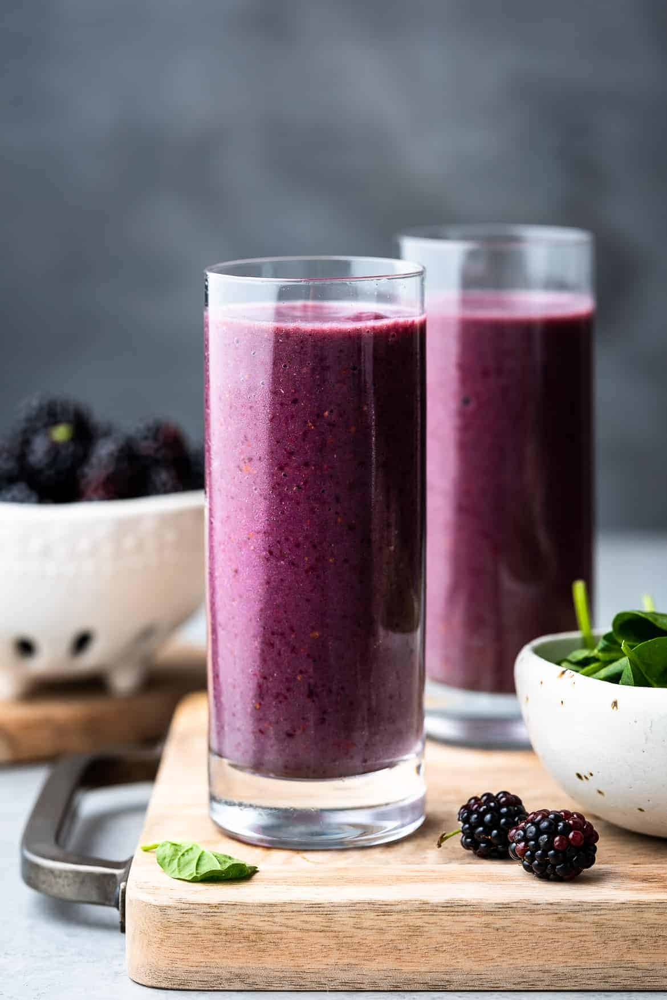

Blackberry and Kale Smoothie

Description
A tasty drink consisting of all healthy ingredients which include kale, carrots, blackberry's, strawberry's, a banana, almond milk, and a touch of orange juice.
Ingredients
- A blender, any variety will do
- 3-4 large leaves of Kale
- 1/2 cup of carrots
- 1 cup of blackberry's
- 1 cup of strawberry's
- One banana
- 3-4 cups of unsweetened almond milk, may vary depending on blender size
- 1/2 cup of orange juice
Steps
- Put kale in blender first, compress leaves by pressing them down. Recommend using a fork to avoid cutting your hands against the blender's blades. Compressing the leaves will leave room for the other ingredients.
- Add carrots.
- Next add the blackberry's.
- Then add the strawberry's.
- Banana will come next, however best to cut it up into small slices to make it easier to blend.
- Compress all ingredients using a fork before adding liquid.
- Fill the blender up with enough almond milk to cover almost all ingredients but leave about an inch or two to make space for the orange juice.
- Top off with orange juice.
- Make sure blender lid is secure and blend all ingredients for 2-3 minutes until consistency is right. If blender is stuck try to push the ingredients down or add a little more liquid.
- Ready to drink!